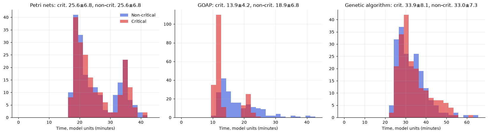

Patient routing in an emergency department: open re-implementation
What this is
The paper compares three routing policies inside a hospital emergency department: Petri nets, GOAP (goal-oriented action planning) and a genetic algorithm. The original experiment code was not preserved. This repository is an open re-implementation: the model is rebuilt from the paper's description, and its free parameters are calibrated so that the means and standard deviations of waiting time match the values read from the paper's figures. Every number on this page can be reproduced with one command.
Results
100 seeds (100-199), not used in the final parameter search. Time in model units treated as minutes. "Target" is read from the paper's figure.
| Method | Critical: model | Critical: target | Non-critical: model | Non-critical: target |
|---|---|---|---|---|
| Petri nets | 25.6 ± 6.8 | 25 ± 5.5 | 25.6 ± 6.8 | 25 ± 5.5 |
| GOAP | 13.9 ± 4.2 | 14 ± 6.2 | 18.9 ± 6.8 | 21 ± 6.5 |
| Genetic algorithm | 33.9 ± 8.1 | 44 ± 10.0 | 33.0 ± 7.3 | 31 ± 10.0 |

Limits
- Calibrated, not independent. 11 free parameters were calibrated against 12 summary statistics read from the figures, on top of base parameters from an earlier calibration. Agreement of the means is a result of calibration.
- Genetic algorithm, critical patients. The paper shows critical patients waiting longer than non-critical ones (about 44 vs 31). The model gives about 34 for both groups. This mismatch is not resolved.
- Spread of GOAP. The model SD for GOAP critical patients (4.2) is lower than the one read from the paper (6.2).
- No clinical data. This is a simulation without real patients. No clinical conclusion follows from it.
- Not the original code. The numbers describe this model, not the one that produced the paper. The paper's own figures are not reproduced here.
Run
pip install -r requirements.txt python code/reproduce.py results
The script prints the table and writes results/forms_model.png. code/fit_v10.py repeats the parameter search; code/_v10.json holds the parameters used above.
Files
code/reconstruct_v3.py- corridor model of the emergency departmentcode/fit_v3.py,code/fit_v10.py- model factory, the three policies, parameter searchcode/_v3_detour.json,code/_v10.json- calibrated parameterscode/reproduce.py- reproduces the table and figure on fresh seeds